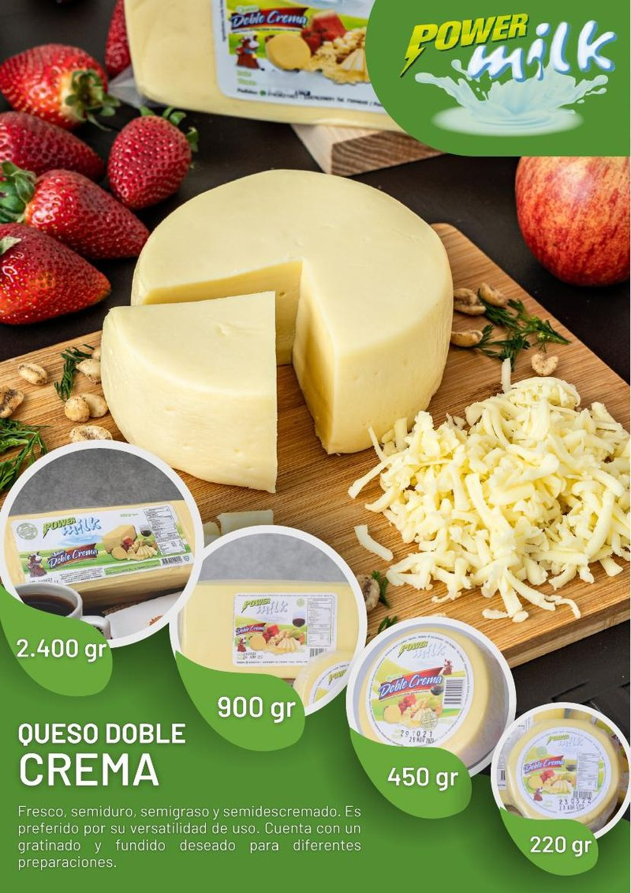

★ Estrella
Queso de pasta hilada
Queso Doble Crema
Fresco, semiduro, semigraso y semidescremado. Preferido por su versatilidad de uso. Cuenta con un gratinado y fundido deseado para diferentes preparaciones.
2.400 gr
900 gr
450 gr
220 gr